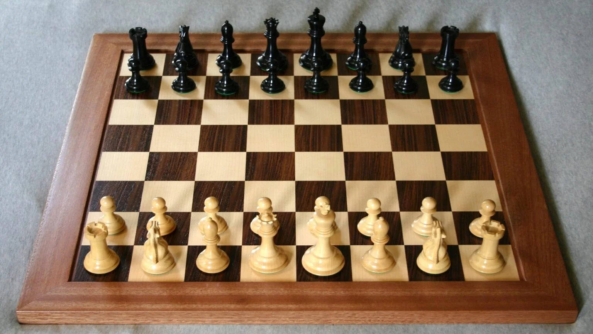

MIS PASATIEMPOS
Además del estudio, tengo varios pasatiempos que forman parte importante de mi vida. Cada uno me aporta algo diferente: concentración, inspiración, relajación o simplemente un momento de disfrute personal.
- Ajedrez: Es el pasatiempo que más me representa. Disfruto resolver problemas tácticos, estudiar aperturas y analizar partidas. El ajedrez me ha enseñado a pensar con lógica, planificar y tener paciencia. 
- Videojuegos: En mi tiempo libre me gusta jugar videojuegos, especialmente aquellos que requieren estrategia o tienen una buena historia. Es una forma divertida de desconectarme y también de compartir con amigos.
- Cocinar: También me gusta cocinar, es una actividad que me relaja y me da la oportunidad de experimentar en la cocina, probar nuevas recetas y sorprenderme con los sabores que puedo crear.
- Música: Escuchar música me ayuda a concentrarme cuando estudio o programo. A veces también la uso simplemente para relajarme.
- Películas y series: Me interesan las historias bien contadas, ya sean de ciencia ficción, suspenso o drama. Analizar personajes y tramas es algo que también disfruto.
- Leer: Aunque no leo constantemente, hay momentos en los que disfruto sumergirme en libros de ciencia, tecnología o novelas que despiertan la imaginación.